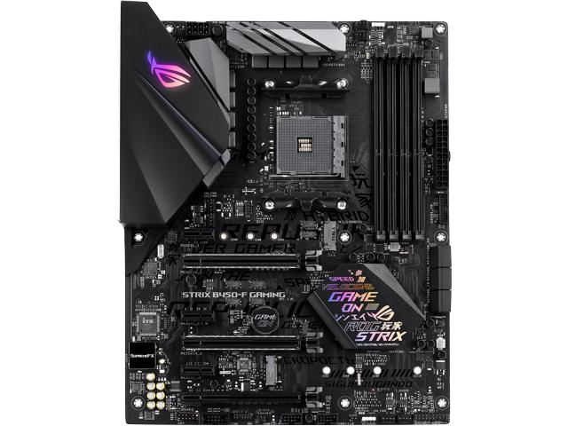
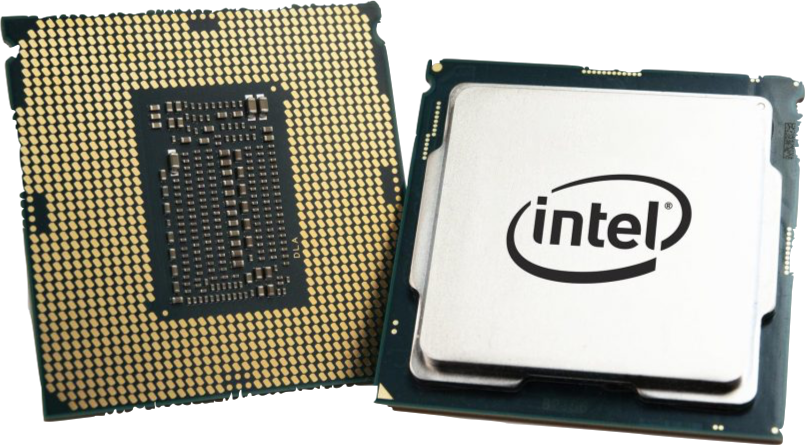
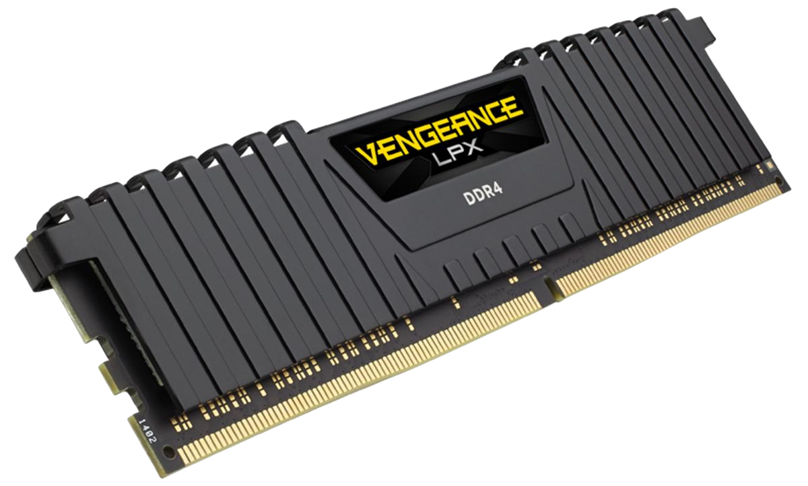
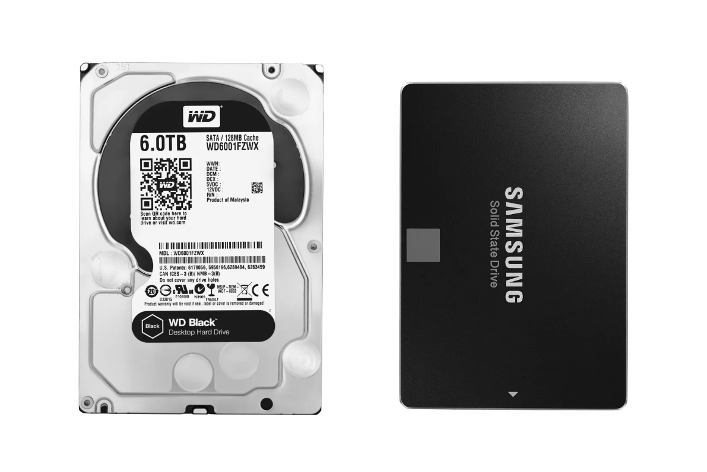

PC Genius
Guide To Pc Components and What They Do
Motherboard
The motherboard is the base of any computer. Every component connects to the motherboard and it ensures that all of the components
work together. It contains many expansion slots and it houses the CPU, GPU, RAM. On the side of the motherboard there are external connectors that can be connected to a keyboard or mouse for example.

CPU or Central Processing Unit
The CPU is the brain of the whole computer. It is made of several small processing units. The CPU performs tasks like launching applications and constantly performs
calculations. The CPU is housed in the middle of the motherboard and makes contact with small pins on the motherboard to tranfer signal.

GPU or Graphics Processing Unit
The graphics card manages the rendering of any graphics and it outputs them to an external display. Graphics cards can also be integrated into the CPU, but if a lot of processing
power is required a dedicated GPU is a must. The GPU decodes 3D video and renders the scenes in video games.

RAM or Random Acces Memoery
RAM is an extremely fast form of memory. RAM stores information that the computer might need in the near future.
This way the computer has convenient acces to data that would otherwise would take a long time to acces. RAM speeds up the load time off applications and if the computer
is limited by ram it will make it significantly slower.

Hard Drive and SSD
Both Hard drives and ssd's are storage devices. Hard drives use a physical spinning disk to read and write information. An ssd uses no moving parts and stores information on multiple chips.
SSD's are a lot faster but a downside is that they are usually more expencive.

Power Supply
The power supply provides power to the whole system. It plugs into the motherboard and any components requiring power like the GPU and hard drives.